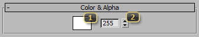

Materials: Texmap Types: SC2 Color
SC2 Color provides a quick and cheap alternative to SC2 Bitmap. It allows for the specification of a direct color to provide to the shader, rather than having to provide a texture.
Color & Alpha
The Color & Alpha rollout defines a simple color and alpha for that particular material
Color defines the color to provide to the current material layer.
Alpha sets the value of the Alpha channel for the current layer. For any material layer that requires a single channel value, this is the value used.
Fresnel
Fresnel settings control the appearance of the color based on the normal direction of the surface.
Fresnel mode
None disables the effect. All the parameters in this rollout become unused.
Standard makes the color favor surfaces pointing perpendicular to the camera direction. This has a visual effect of highlighting the outer edges of a model.
Inverted masks the color so it is most visible when the surface normal is directly facing the camera. This has a visual effect of highlighting the core of a model.
Constant Standard calculates the mask by using the surface normal and a single arbitrary axis. By default this is the world Z axis, but it can be reoriented using the Rotation field. This favors surfaces pointing perpendicular the defined axis.
Constant Inverted calculates the mask by using the surface normal and a single arbitrary axis. By default this is the world Z axis, but it can be reoriented using the Rotation field. The color appears on surfaces facing towards the defined axis.
Fresnel exponent controls the falloff of the fresnel effect by applying a power curve. This occurs before min and max operations, and as such, the values of Fresnel Min and Fresnel Max may be relative to a non-linear term. Changing this field, may change their apparent values.
Fresnel min may have two different meetings depending on the value of the Clamp Position parameter. When Clamp Position is enabled, this value represents the point along the fresnel falloff where the color will no longer be visible. When clamping is disabled, this value represents the minimum brightness of the color after the fresnel term.
Fresnel max may have two different meetings depending on the value of the Clamp Position parameter. When Clamp Position is enabled, this value represents the point along the fresnel falloff where the color will be fully visible. When clamping is disabled, this value represents the maximum brightness of the color after the fresnel term.
Clamp position changes the behavior of the fresnel effect's brightness. When disabled, the color fades from a minimum intensity to a maximum intensity, as defined by Fresnel Min and Fresnel Max. When enabled, the color is instead faded in from 0 to 1 from the points where the fresnel brightness would have been clamped by the same values. Enabling clamp is useful when the color is intended to disappear completely from certain angles.
Do not mirror prevents the effect from showing up on both sides of the mesh. While this is not usually noticeable on a view-aligned fresnel effect, it can be an undesirable artifact on the Constant variants.
Local transform makes the fresnel effect occur in local space. The Rotation and Mask effects are rotated with the model. This can be useful if the effect, for example, should be aligned with a cylinder, no matter which way the cylinder is rotated.
Rotation realigns the vector used to calculate the fresnel effect. For the Constant fresnel variants the default vector is facing along the Z axis. In relation to the default view, the first parameter yaws the effect left and right. The second parameter pitches the effect up and down.
Mask restricts movement of a non-constant fresnel vector along certain axes. For example, a value of 1.0 in the third component would completely prevent the fresnel effect from moving up and down as the camera angle changes.